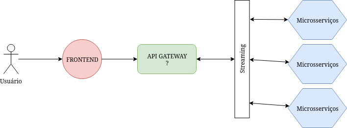

Eventos, PHP e Microsserviços, pode dar em festa, até via streaming
Quem sou eu?
Francisco (aka. Chicão) Thiago
Mestrando em Ciência da Computação (UECE)
Desenvolvedor Web (3E Engenharia)
Laravel, Codeigniter,
Mysql, Mongodb, Couchdb,
Ionic, Vuejs, Quasar, Jquery 
AWS
impressora, formatar windows, evangelizar o linux,
etc, etc, etc ...
@chicaothiago

Agenda:
- Microsserviços
- Eventos e Php
- Php Reativo? What?!?
- Comunicação, Streaming
- Php e streaming... party hard?
Microsserviços e os eventos
O que seria microsserviços?

Monolítico

Microsserviços
Como se parece uma arquitetura de microsserviços?

Um pouco de zoom

E em php?

Eventos e PHP
Mas porque falar de eventos?

Mas porque falar de eventos?
Tá, e onde estão os eventos no PHP?
Exemplos do que podemos usar para executar eventos assíncronos (similar JS)


Mas, quero rodar eventos no meu Laravel/Symfony. Pode não?
Marré-claro